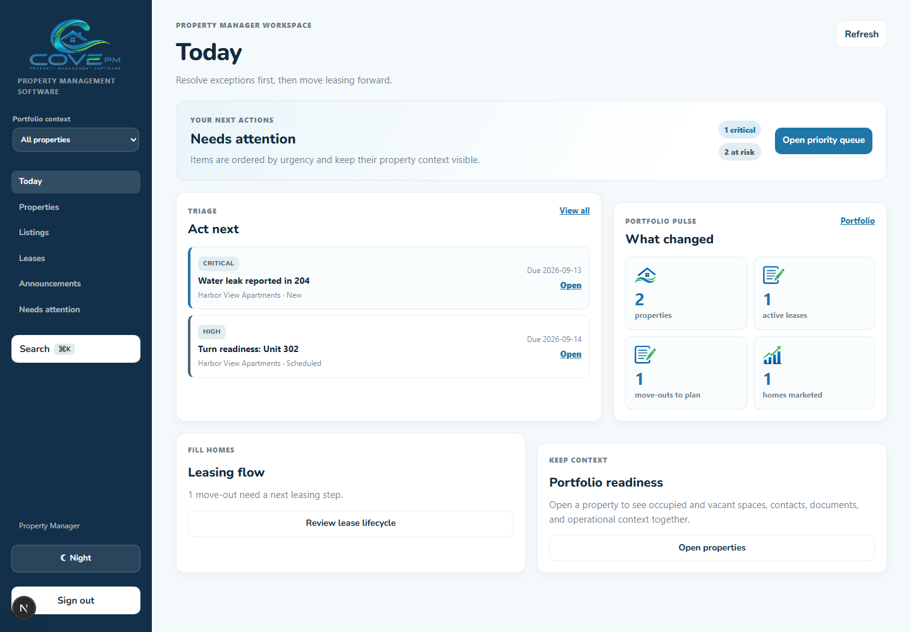
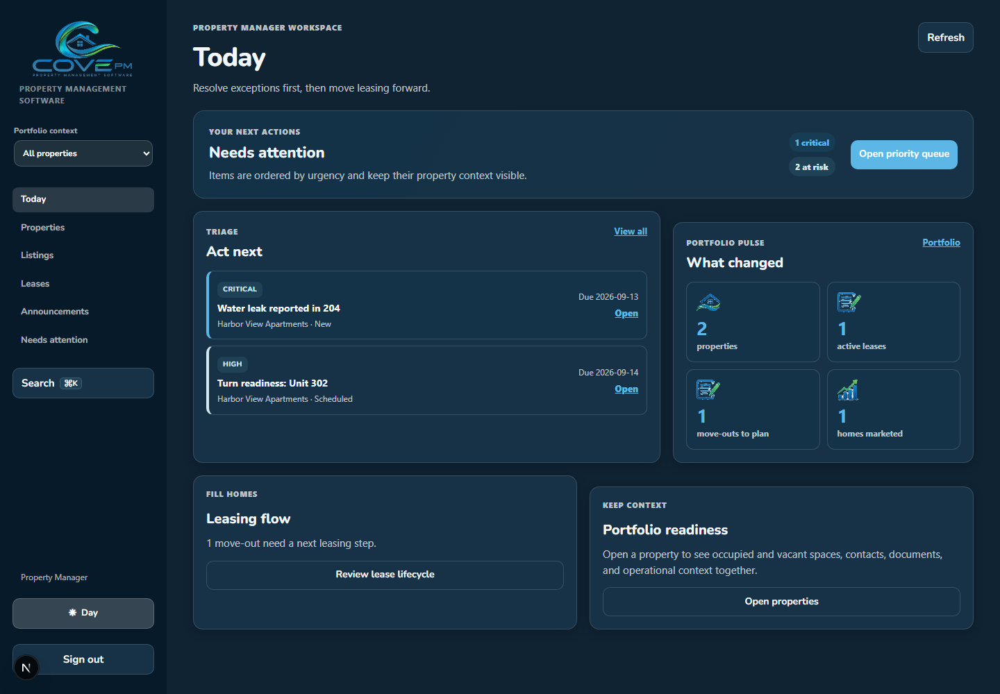
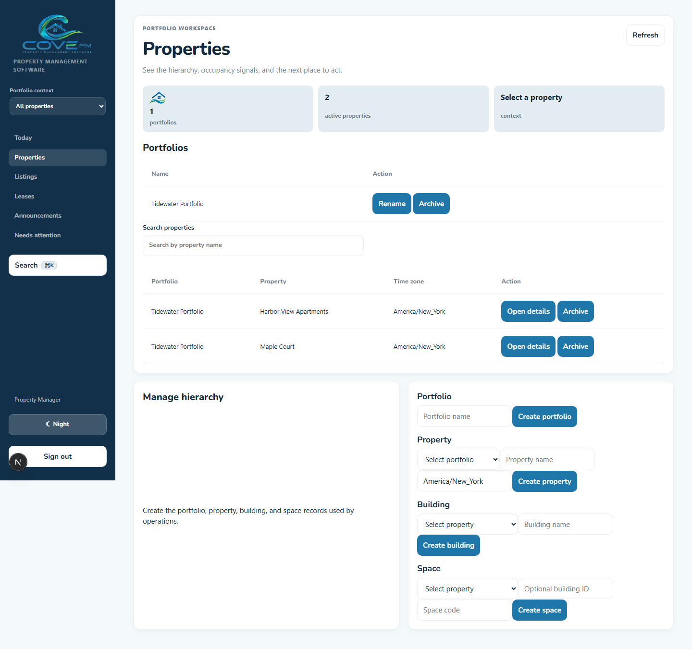
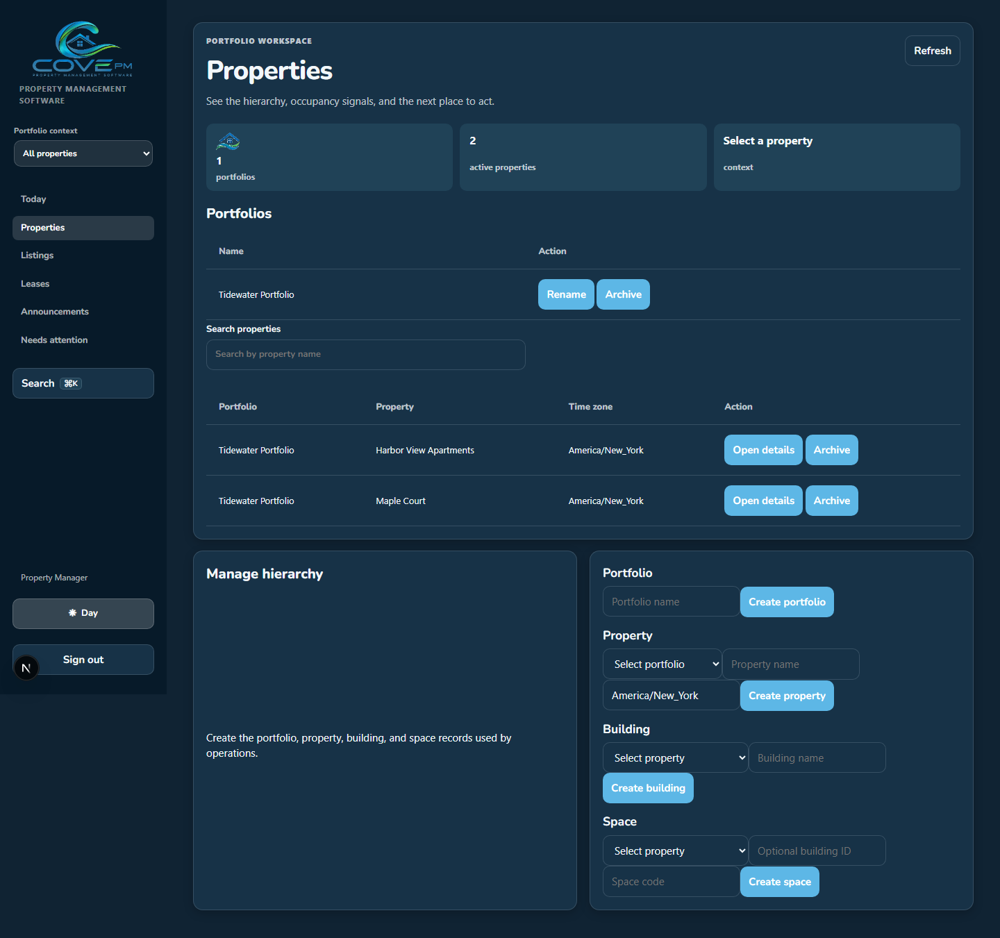
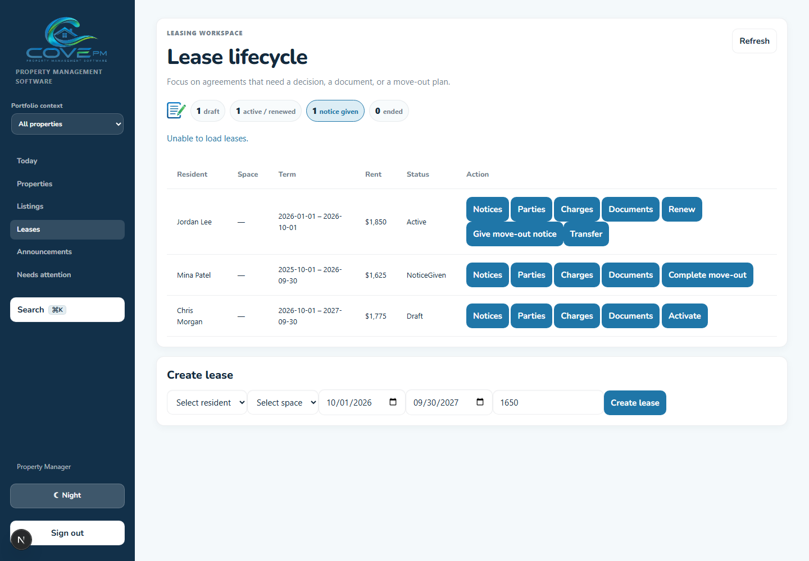
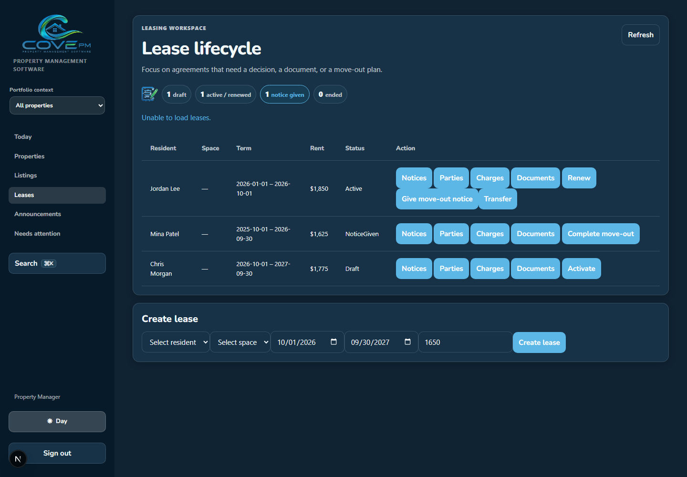
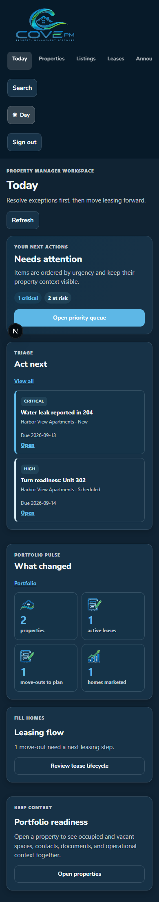

Shell, dashboard, property, and leasing
Day/night desktop captures demonstrate the shared theme tokens, accessible theme toggle, Cove mark treatment, operational priority hierarchy, property context, and lease lifecycle cues.






